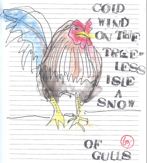

A Quarterly Journal
Jeffrey Woodward, Founder & General Editor
Volume 7, Number 1, March 2013

Gary LeBel
Cumming, Georgia, USA
Epitome (a haibun-ga)
As I return on the path through the winter woods and down the three steps to the little bridge, there's a sudden splash of color. It stands not three feet away, nearly two feet tall, neither scared nor exactly convivial. Someone's prize or pet? Since this is a state preserve, he's a little out of his element.
"Are you lost?" I say evenly, sitting down on a step beside him. He gives me a head-tilt and a widened eye while shuffling in place as if he's got somewhere to go and I'm holding him up. His comb stands straight up, crimson, leathery and pliant; you can tell he's proud of it. He's fresh-bathed and preened with tailfeathers dipped in royal blue. But those feet! They look too big for him stuck as they are to those dull yellow pipes of legs. Altogether he's . . . well . . .the epitome of himself. Not a bad thing to be.
Amazingly he lets me sketch him fast and breakneck with the implied proviso that I'll color him later at home.
Then a hiker, passing around us, flings me a sour glance on the way by as if a man in a Fedora sprawled out on a step drawing a rooster from life were somehow un-American or even dangerous—
but such a look only enables, and makes one want to keep on with whatever it is they're doing till they're good and done with it,
to the point where they may in fact become a danger,
which I signify with a head-tilt and a raised, intractable eye.
cold wind—
on the treeless isle
a snow of gulls